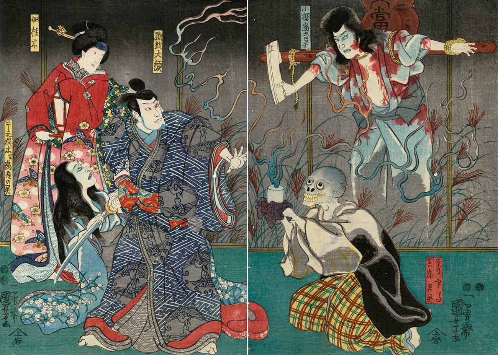

Utagawa Kuniyoshi, a towering figure in the world of ukiyo-e, left an indelible mark on Japanese art with his dynamic and imaginative prints. Active during the first half of the 19th century, Kuniyoshi's prolific output spanned a diverse range of subjects, from traditional landscapes and kabuki actors to mythical creatures and legendary warriors. His bold compositions, characterized by dynamic poses, exaggerated expressions, and intricate details, exude a sense of energy and vitality that captivates viewers. Kuniyoshi's masterful use of color and line, coupled with his unparalleled storytelling ability, established him as one of the foremost ukiyo-e artists of his time. His series such as "One Hundred and Eight Heroes of the Popular Water Margin" and "Fifty-three Stations of the Tōkaidō" showcase his versatility and artistic vision, cementing his legacy as a visionary artist whose influence continues to resonate in contemporary art.
click an image to see full resolution
Katsushika Hokusai, often regarded as one of Japan's most iconic and influential artists, forever transformed the landscape of ukiyo-e with his unparalleled creativity and mastery of the medium. Born in the late 18th century, Hokusai's artistic career spanned over seven decades, during which he produced an astonishing array of works encompassing landscapes, nature studies, and supernatural beings. His most renowned masterpiece, "Thirty-Six Views of Mount Fuji," includes the iconic print "The Great Wave off Kanagawa," which has become a globally recognized symbol of Japanese art. Hokusai's artistic genius lay not only in his technical skill but also in his boundless imagination and relentless pursuit of innovation. His artistic vision extended beyond traditional boundaries, influencing countless artists both in Japan and abroad. Even in his later years, Hokusai remained dedicated to his craft, famously remarking, "At ninety, I shall penetrate the mystery of things." Through his timeless creations, Hokusai's legacy endures as a testament to the power of art to transcend time and culture.
click an image to see full resolution
Utagawa Hiroshige, often referred to simply as Hiroshige, stands as one of the most celebrated artists in the rich tapestry of ukiyo-e tradition. Active during the early to mid-19th century, Hiroshige's evocative landscapes and depictions of everyday life captured the hearts of audiences both in Japan and beyond. Renowned for his mastery of composition and atmospheric perspective, Hiroshige's prints transport viewers to serene landscapes, bustling city streets, and picturesque vistas. His series such as "Fifty-three Stations of the Tōkaidō" and "One Hundred Famous Views of Edo" showcase his unparalleled ability to infuse scenes with a sense of mood and emotion. Hiroshige's influence extended far beyond his lifetime, with his works inspiring generations of artists, including the Impressionists in Europe. Through his timeless artistry, Hiroshige continues to be revered as a visionary whose legacy resonates across cultures and epochs.
click an image to see full resolution
Tsukioka Yoshitoshi, a towering figure in the realm of Japanese woodblock prints, carved a distinct niche in the annals of ukiyo-e with his dynamic and emotionally charged compositions. Active during the tumultuous transition from the Edo period to the Meiji era, Yoshitoshi's artistry navigated themes ranging from historical events and legends to gruesome tales of violence and horror. His prints often depicted dramatic scenes with intense expressions, intricate details, and bold use of color and line. Yoshitoshi's series such as "One Hundred Aspects of the Moon" and "Thirty-two Aspects of Customs and Manners" showcase his technical prowess and narrative depth, capturing the essence of human emotion and experience. Despite facing personal struggles and the decline of traditional woodblock printing, Yoshitoshi's relentless dedication to his craft earned him recognition as the last great master of ukiyo-e. His enduring legacy continues to inspire admiration and fascination, as his prints remain cherished treasures in the world of Japanese art.
click an image to see full resolution